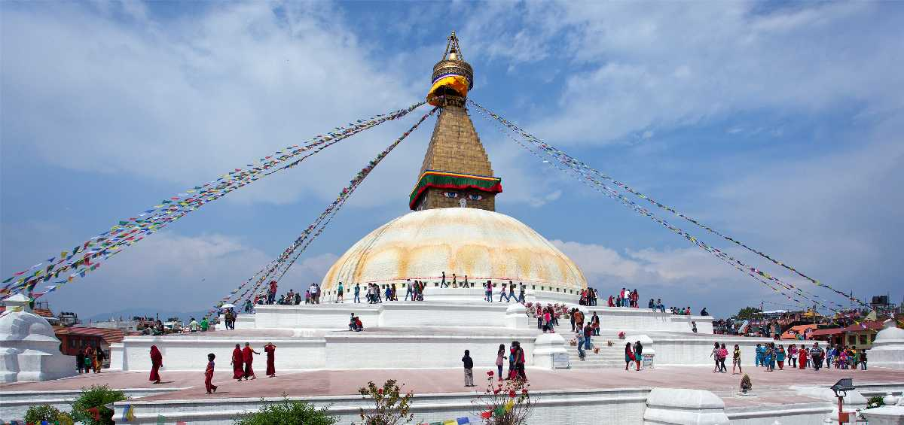
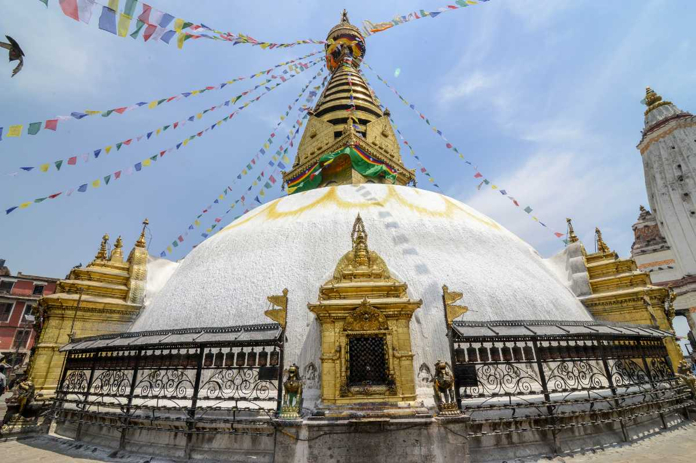

Here are the top tourist places and attractions in Nepal
Here are the tourist places in Nepal to explore sightseeing destinations. Read more to plan your travel to Nepal.
"The City of Peace"
Kathmandu Tourism
Sprawled over its namesake valley surrounded by Himalayan mountains, Kathmandu is Nepal’s capital and most-visited destination, full of ancient temples, golden pagodas, natural beauty and fascinating villages. At an elevation of 4,344 feet, Kathmandu marks the confluence of the Bagmati and Vishnumati rivers. One can find excellent trekking options of the world’s tallest peaks, stunning Indo-Tibetan and Newari craftsmanship, UNESCO-listed heritage landmarks and delicious food here.
Kathmandu is the gateway to exploring Nepal’s essence. Amidst the old city’s maze-like alleyways is the 1627-built Durbar Square, where locals frolic during Indra Jatra masked dance festival. Founded in the 2nd century AD, Nepal is one of the oldest continuously inhabited places in the world. Swayambhunath Stupa, Pashupatinath Temple, Monkey Temple, and Boudha Stupa are some more eminent religious establishments.
Outdoor enthusiasts flock to Nagarkot, Rani Pokhari Lake, and Champadevi Hill for hiking, bungee jumping, rafting, and mountain climbing. Learning about Buddhism at Kopan Monastery, buying pashmina shawls and trinkets at Indra Chowk and Thamel’s markets, and digging into steaming momos are great ways to enhance the experience.
From courtyards of drying chillies and rice, incense wafting out of shrines, national museums, and contemporary Nepali art galleries to hobbit-sized workshops, bustling bazaars, rickshaws, Thukpa and Everest beer, Kathmandu offers something unique for every tourist, devotee, backpacker, history buff, foodie and shopaholic
Places To Visit In Kathmandu

1.1 Pashupatinath
click here to know about Pashupatinath

1.2 Baudhanath
click here to know about Baudhanath
1.3 Shyambhu
click here to know about Shyambhunath
1.4 Kathmandu Darbar Square
click here to know about Kathmandu Darbar Square

1.5 ChandragiriHill
click here to know about ChandragiriHill